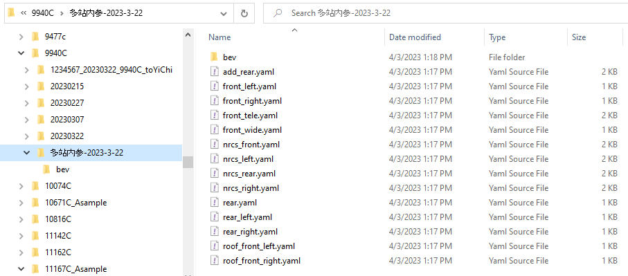

Camera Calib Guideline
2023.4.3 Update
Step1. Preparatory work
Install dependency library
sudo apt-get install libgoogle-glog-devsudo apt-get install libcholmod3sudo apt-get install libcxsparse3Executable permissions
chmod 777 bin/camera_calib_main bin/test_calibration bin/test_pipelineConfiguration path
Configure run_all_flexible_camera.py Main program path 、 Enter the picture and parameter path 、 Output result path
Step2. Data collection and calibration
The current vehicle is the first time
Collecting 7 stops. Previously, as an example, the full -angle as an example, you need to provide FRONT_WIDE_01.JPG, Front_wide_02.jpg, Front_wide_03.jpg, Front_WIDE_04.jpg, Front_wide_05.jpg, Front_06.jpg, FRONT_W_W_W IDE_07.jpg
The first stop is needed on the posterior, and the number number of other stations is casual
1. Pictures of front -view wide -angle in each location: front_wide_01 ~ 7.jpg
2. Pictures of the front of the fish eye in each location: nrcs_front_01 ~ 7.jpg
3. Pictures of the left fish eye in each location: nrcs_left_01 ~ 7.jpg
4. Pictures of the right fish eye in each location: nrcs_right_01 ~ 7.jpg
5. Pictures of post -fish eyes in each location: nrcs_rear_01 ~ 7.jpg
6. Foreign long focus in each location picture: front_tele_01 ~ 7.jpg
7. Pictures of the left before the left week: front_left_01 ~ 7.jpg
8. Performance on the right front week at all positions: FRONT_RIGHT_01 ~ 7.jpg
9. Pictures of the left after the left week: rear_left_01 ~ 7.jpg
10. Right Week Vision of the picture in each location: rear_ritt_01 ~ 7.jpg
11. Later viewing pictures in each location: REAR_01 ~ 7.JPG
Put the picture in the call_allxible_camera.py directory in the run_all_flexible_camera.py, and then run the calibration
python3 run_all_flexible_camera.pyThe parameter configuration at runtime is as follows. Camera_num and car_id, please fill in the actual actual
how many cameras(11/14): 11 vel_num: 7 car_id: 10167C fix intrinsic(y/n): n If the calibration program is abnormally interrupted, please check it yourself first Marked red The error information, check whether the data passed in is error; if the following errors are reported, you can run a few more times to try
fail to initialize intrinsic, please retry or give initial intrinsic by manualIf you still cannot complete it if you run 3-5 times, please contact the calibration group to solve
After the calibration is completed, the calibration result is also stored in a copy of the car number. See the file name and location below
The current vehicle is not the first time
Collect 1 stop data, the vehicle is located on the positive device, and the internal reference yaml file that is passed into multiple stations.

1. The picture and the multi -stop YAML: FRONT_WIDE_01.JPG Front_wide.yaml
2. Pictures and multi -stations YAML on the posterior fish eye: nrcs_front_01.jpg nrcs_front.yaml
3. Pictures and multi -stood YAML on the left fish eye: nrcs_left_01.jpg nrcs_left.yaml
4. Pictures and multi -stop YAML on the right fish eye: nrcs_right_01.jpg NRCS_RIGHT.YAML
5. The pictures and multi -stop YAML: nrcs_rear_01.jpg nrcs_rear.yaml
6. The picture of the foresight long focus on the positive and multi -stop YAML: Front_Tele_01.jpg Front_Tele.yaml
7. The picture and the multi -stop YAML: FRONT_LEFT_01.jpg FRONT_LEFT.YAML
8. The picture and multi -stop YAML on the right front week: front_right_01.jpg from_right.yaml
9. The picture and multi -stop YAML on the left after the left week: rear_left_01.jpg rear_left.yaml
10. The picture and multi -stop YAML on the right weekly viewer: rear_right_01.jpg rear_right.yaml
11. The picture and the multi -stop yaml on the posterior viewer: rear_01.jpg rear.yaml
The input file is placed in the call_allxible_camera.py directory in the run_all_flexible_camera.py, and then runs the calibration calibration
python3 run_all_flexible_camera.pyThe parameter configuration at runtime is as follows. Camera_num and car_id, please fill in the actual actual
how many cameras(11/14): 11 vel_num: 1 car_id: 10167C fix intrinsic(y/n): y Step4. Results output
The calibration result is output in the output_path directory set in the run_all_flexible_camera.py script
Copy the contents in the folder to the public disk as the calibration result
Step5. Result verification
View the projection of point clouds to images. For the specific method, please refer to: Lidar Calib Guideline - wave 3 development - Docupedia (bosch.com)
Check out the output bev image to see if alignment is aligned